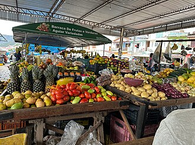

Conheça a AgroFeira
A AgroFeira reúne produtores da região de Paragominas para oferecer alimentos frescos diretamente aos consumidores, valorizando a produção local e fortalecendo a agricultura familiar.
Conheça os produtos vendidos e escolha os seus favoritos na nossa feira.

Produtos vendidos
Voltar para a apresentação da feira
- Mandioca — saca de 60 kg
- Banana-prata — cacho
- Açaí — rasa
- Pimenta-do-reino — quilo
- Cupuaçu — quilo
- Alface — maço
Os preços mudam toda semana. Consulte os preços antes de comprar.